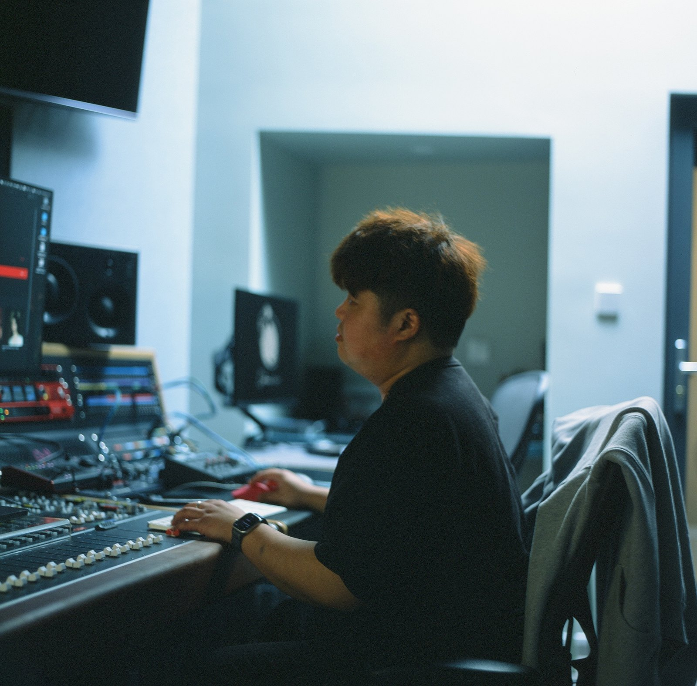
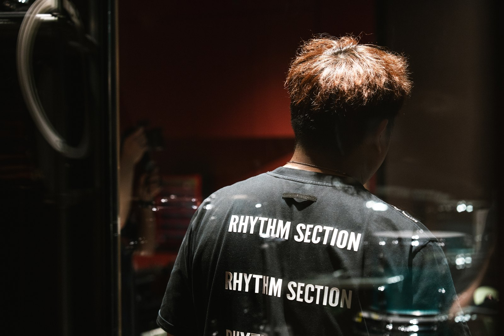
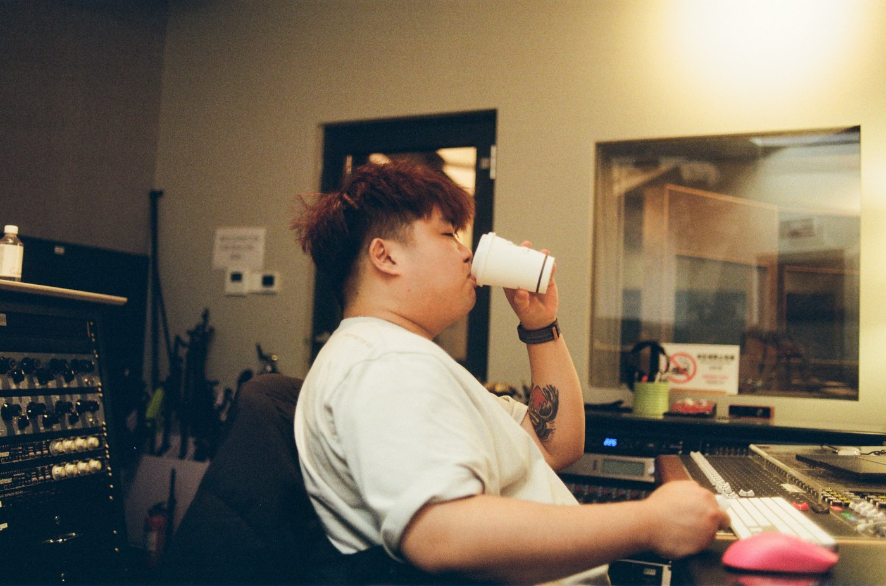

IN THE STUDIO沈锦天 / IAN
独立表达，共同完成。SELECTED MUSIC PORTFOLIO
01 / SELECTED WORK
作品，让声音说话。
从流行单曲到银幕与舞台，
每一首都有自己的声音。
02 / ABOUT IAN
声音背后，
是对细节的在意。


制作之间，生活之中。STUDIO NOTES / IAN
我是沈锦天，也可以叫我 IAN。
我做音乐，也打磨声音。
我的工作贯穿录音、音频编辑、配唱制作、和声编配与混音。与不同的音乐人合作时，我关注作品本身的表达，让演唱里的情绪和制作里的细节，落在同一个方向上。
参与项目涵盖流行单曲、EP 与专辑、音乐综艺及影视相关音乐。对我而言，好的制作始于认真倾听，也完成于每一个细节。
音乐制作配唱制作录音 / 编辑和声编配混音
03 / LET’S MAKE MUSIC
下一首，
一起完成。
歌曲制作、录音与混音合作，
欢迎聊聊你的想法。
EMAIL / 邮箱ianshenjintian@gmail.com
PHONE / 电话+86 150 8837 7596